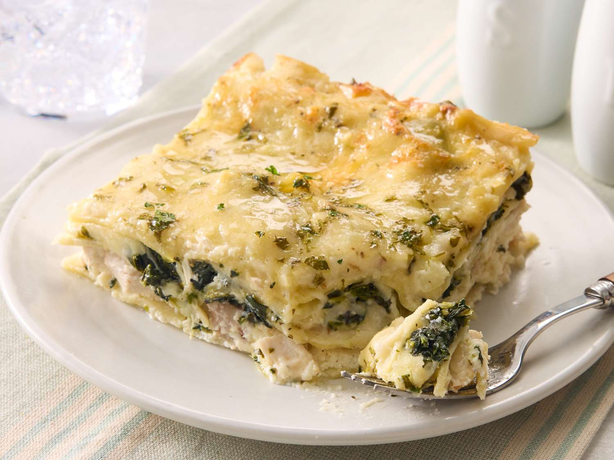

White Cheese Chicken Lasagna

Description
This white chicken lasagna recipe is a satisfying and crowd-pleasing twist on a classic Italian favorite.
Ingredients
- Noodles: Of course, you'll need lasagna noodles.
- Butter: Cook the onion and garlic in butter.
- Vegetables: You'll need an onion and two packages of frozen spinach.
- Garlic: Cook a clove of minced garlic with the onion for a more intense flavor.
- Flour: All-purpose flour thickens the sauce.
- Broth: Use store-bought chicken broth or make your own at home.
- Broth: Use store-bought chicken broth or make your own at home.
- Seasonings and herbs: This chicken lasagna is seasoned with salt, dried basil, dried oregano, black pepper, and fresh parsley.
- Cheeses: You'll need mozzarella, Parmesan, and ricotta cheeses.
- Chicken: This white chicken lasagna is a great use for leftover chicken!
Steps
- Boil and drain the lasagna noodles.
- Cook the onion and garlic in butter, then whisk in the flour. Add the broth, milk, and salt.
- Add some of the mozzarella and Parmesan. Season with basil, oregano, and pepper. Set aside.
- Assemble the lasagna according to the recipe.
- Bake in the preheated oven.
Home